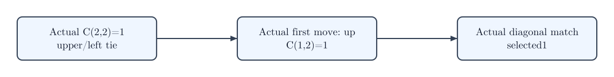
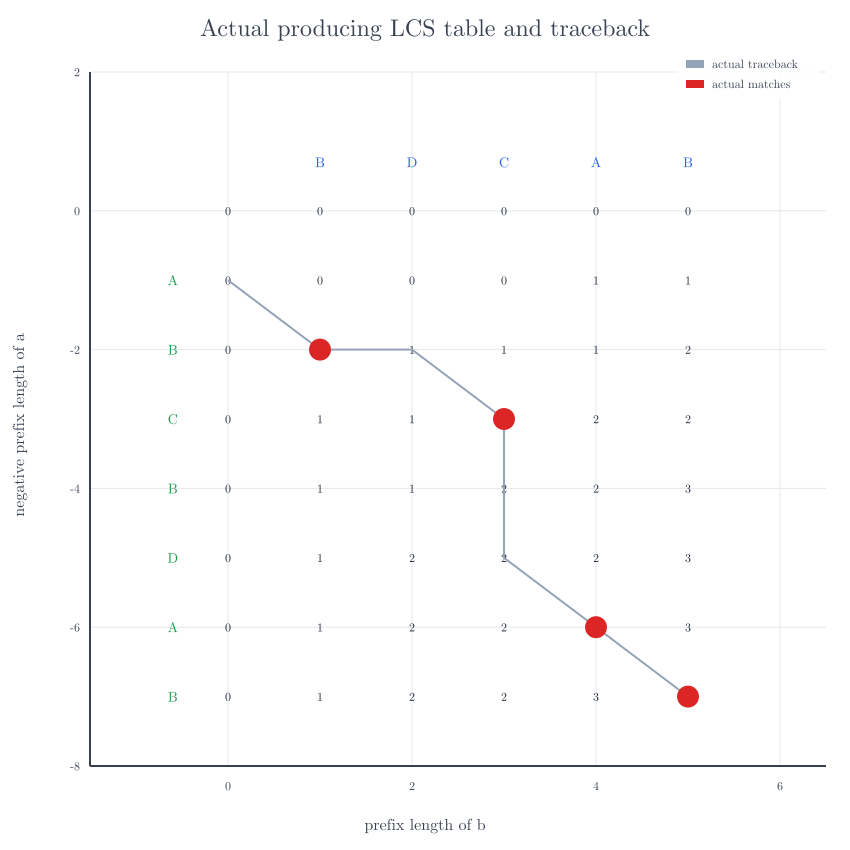
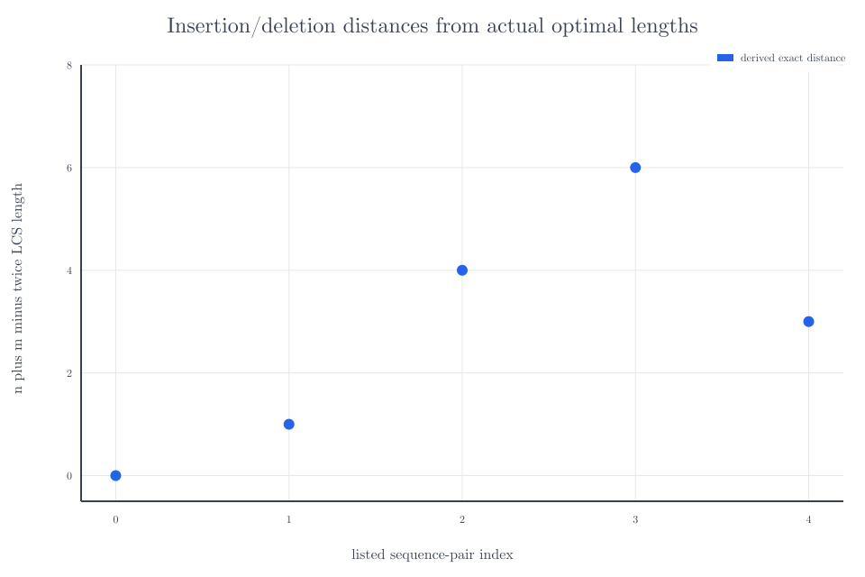
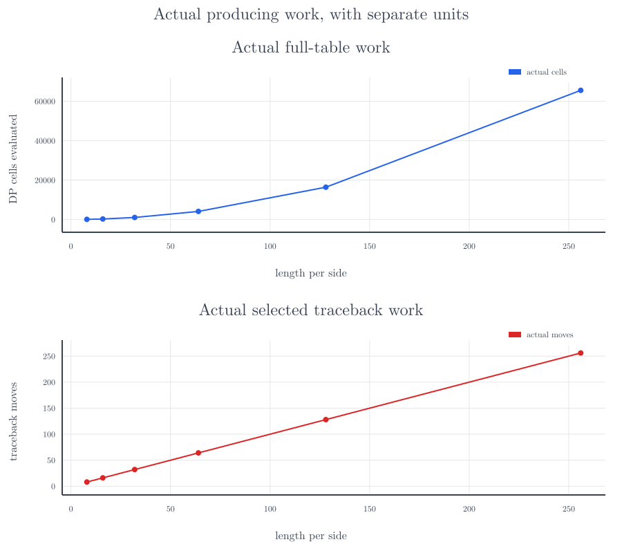

Longest common subsequences from the producing table
Abstract
A common subsequence preserves order while allowing gaps. The full-table dynamic program returns one optimal sequence, and tie choices can change which optimum is returned. This report reads the library’s actual table and traceback rather than rebuilding display evidence, retains the original character example and distinguishes insertion/deletion distance from unit-cost substitution distance.
Prefix optimality
Let C(i,j) be the longest common subsequence length of prefixes a[0,i) and b[0,j). Empty prefixes have length zero. Equal last elements extend a diagonal optimum; unequal last elements force at least one last element to be omitted:
Induction on total prefix length proves the optimum. Traceback takes a diagonal on matching elements, otherwise the upper neighbor on ties and the left neighbor only when it is strictly better. That deterministic rule chooses one optimum, not all optima or a lexicographically smallest one. All inputs are integer sequences; character conversion below merely represents these ASCII examples.
A tiny actual tie
For a=(1,2), b=(2,1), both one-element answers are optimal. The native upper-neighbor tie preference returns1. The concept diagram reads the real first traceback move and result.
#include <dm/dm.hpp>
int main() {
std::filesystem::create_directories("build");
auto t = dm::algorithms::lcs_trace({1, 2}, {2, 1});
std::print("| actual prefix i | actual prefix j | actual move | actual table value |\n| ---: | ---: | " "--- | ---: |\n");
for (auto &e : t.steps)
std::print("| {} | {} | {} | {} |\n", e.i, e.j,
e.move == dm::algorithms::LCSMove::Match ? "match"
: e.move == dm::algorithms::LCSMove::Up ? "up" : "left",
t.table[e.i][e.j]);
std::print("\nActual selected sequence element {}; actual cells {}; actual moves {}.\n",
t.analysis.sequence[0], t.analysis.work.cells,
t.analysis.work.traceback_steps);
dm::graphics::Diagram d;
d.node("corner", {0, 0},
std::format("Actual C(2,2)={}\nupper/left tie", t.table[2][2])).node(
"up", {6, 0},
std::format("Actual first move: up\nC(1,2)={}", t.table[1][2])).node(
"match", {12, 0},
std::format("Actual diagonal match\nselected{}", t.analysis.sequence[0])).edge("corner", "up").edge("up", "match").save_svg("build/lcs_tie.svg");
}| actual prefix i | actual prefix j | actual move | actual table value |
|---|---|---|---|
| 2 | 2 | up | 1 |
| 1 | 2 | match | 1 |
Actual selected sequence element 1; actual cells 4; actual moves 2.

Original ABCBDAB and BDCAB
Retain the original strings and deterministic result BCAB. Native capture exposes the exact table used to produce that output and the actual chronological traceback moves. The figure draws the table once and overlays those real moves; red points identify actual matching diagonal sources. Match letters spell the answer in reverse along the corner-to-boundary path, or forward when those matches are reversed.
#include <dm/dm.hpp>
int main() {
std::filesystem::create_directories("build");
std::string as = "ABCBDAB", bs = "BDCAB";
auto t =
dm::algorithms::lcs_trace(std::vector<int>(as.begin(), as.end()),
std::vector<int>(bs.begin(), bs.end()));
std::print("Actual selected LCS: {}.\n\n| actual a prefix | empty | B | D | C | A | B |\n| ---: | ---: " "| ---: | ---: | ---: | ---: | ---: |\n",
std::string(t.analysis.sequence.begin(),
t.analysis.sequence.end()));
auto p = dm::graphics::RPlot::create();
for (std::size_t i = 0; i < t.table.size(); ++i) {
std::print("| {} |", i);
for (std::size_t j = 0; j < t.table[i].size(); ++j) {
std::print(" {} |", t.table[i][j]);
p.text(j, -double(i), std::to_string(t.table[i][j]), {31, 41, 55},
12);
}
std::print("\n");
}
std::vector<double> x, y, mx, my;
for (auto &e : t.steps) {
x.push_back(e.j);
y.push_back(-double(e.i));
if (e.move == dm::algorithms::LCSMove::Match) {
mx.push_back(e.j);
my.push_back(-double(e.i));
}
}
auto last = t.steps.back();
x.push_back(last.j - (last.move != dm::algorithms::LCSMove::Up));
y.push_back(-double(last.i - (last.move != dm::algorithms::LCSMove::Left)));
p.line(x, y, "actual traceback", {148, 163, 184}, 2).points(
mx, my, "actual matches", {220, 38, 38}, 11);
for (std::size_t j = 0; j < bs.size(); ++j)
p.text(j + 1, .7, bs.substr(j, 1), {37, 99, 235}, 14);
for (std::size_t i = 0; i < as.size(); ++i)
p.text(-.6, -double(i + 1), as.substr(i, 1), {22, 163, 74}, 14);
p.size(850, 850).x_limits(-1.5, 6.5).y_limits(-8, 2).title(
"Actual producing LCS table and traceback").x_label("prefix length of b").y_label("negative prefix length of a").save_svg("build/lcs_original.svg");
}Actual selected LCS: BCAB.
| actual a prefix | empty | B | D | C | A | B |
|---|---|---|---|---|---|---|
| 0 | 0 | 0 | 0 | 0 | 0 | 0 |
| 1 | 0 | 0 | 0 | 0 | 1 | 1 |
| 2 | 0 | 1 | 1 | 1 | 1 | 2 |
| 3 | 0 | 1 | 1 | 2 | 2 | 2 |
| 4 | 0 | 1 | 1 | 2 | 2 | 3 |
| 5 | 0 | 1 | 2 | 2 | 2 | 3 |
| 6 | 0 | 1 | 2 | 2 | 3 | 3 |
| 7 | 0 | 1 | 2 | 2 | 3 | 4 |

Distance identity and its scope
Keeping a common subsequence of length L deletes n−L elements from a and inserts m−L from b, costing n+m−2L. Conversely, the undeleted elements of any insertion/deletion edit script form a common subsequence, so no cheaper script exists. This identity concerns insertions/deletions only. A substitution with unit cost can beat one deletion plus one insertion: the one-element sequences1 and2 have LCS length0 and insertion/deletion distance2, but unit-substitution Levenshtein distance1. No report code implements another edit-distance algorithm.
#include <dm/dm.hpp>
int main() {
std::filesystem::create_directories("build");
std::vector<double> x, y;
std::print("| original first sequence length | original second sequence length | actual LCS length | " "derived insertion/deletion distance |\n| ---: | ---: | ---: | ---: |\n");
std::vector<std::vector<int>> b{{1, 2, 3}, {1, 3}, {3, 2, 1}, {4, 5, 6}, {}};
for (std::size_t i = 0; i < b.size(); ++i) {
auto a = dm::algorithms::lcs_analyze({1, 2, 3}, b[i]);
auto d = 3 + b[i].size() - 2 * a.sequence.size();
std::print("| 3 | {} | {} | {} |\n", b[i].size(), a.sequence.size(), d);
x.push_back(i);
y.push_back(d);
}
auto p = dm::graphics::RPlot::create();
p.points(x, y, "derived exact distance", {37, 99, 235}, 6).y_limits(-.5, 8).title("Insertion/deletion distances from actual optimal lengths").x_label("listed sequence-pair index").y_label("n plus m minus twice LCS length").save_svg("build/lcs_distance.svg");
}| original first sequence length | original second sequence length | actual LCS length | derived insertion/deletion distance |
|---|---|---|---|
| 3 | 3 | 3 | 0 |
| 3 | 2 | 2 | 1 |
| 3 | 3 | 1 | 4 |
| 3 | 3 | 0 | 6 |
| 3 | 0 | 0 | 3 |

Actual full-table work
The implementation evaluates n*m nonboundary cells and allocates(n+1)*(m+1) cells, even for disjoint sequences. Traceback takes at most n+m moves and stops as soon as either prefix is empty. Count-only analysis still needs the full runtime table. Linear-space Hirschberg is a separate library method, not a property of this implementation. The following deterministic integer controls measure real cells and moves without wall-clock timing or a randomized performance claim.
#include <dm/dm.hpp>
int main() {
std::filesystem::create_directories("build");
std::vector<double> x, y, moves;
std::print("| original length per side | actual DP cell evaluations | actual traceback moves | actual " "LCS length |\n| ---: | ---: | ---: | ---: |\n");
for (int n : {8, 16, 32, 64, 128, 256}) {
std::vector<int> a(n), b(n);
for (int i = 0; i < n; ++i) {
a[i] = i % 7;
b[i] = (i + 2) % 7;
}
auto r = dm::algorithms::lcs_analyze(a, b);
std::print("| {} | {} | {} | {} |\n", n, r.work.cells,
r.work.traceback_steps, r.sequence.size());
x.push_back(n);
y.push_back(r.work.cells);
moves.push_back(r.work.traceback_steps);
}
auto p = dm::graphics::RPlot::create(), q = dm::graphics::RPlot::create();
p.line(x, y, "actual cells", {37, 99, 235}, 2).points(x, y, "",
{37, 99, 235}, 4).title("Actual full-table work").x_label("length per side").y_label("DP cells evaluated");
q.line(x, moves, "actual moves", {220, 38, 38}, 2).points(x, moves, "",
{220, 38, 38}, 4).title("Actual selected traceback work").x_label("length per side").y_label("traceback moves");
dm::graphics::RLayout::create(2, 1).add(p).add(q).size(900, 800).title(
"Actual producing work, with separate units").fit_panels().save_svg(
"build/lcs_work.svg");
}| original length per side | actual DP cell evaluations | actual traceback moves | actual LCS length |
|---|---|---|---|
| 8 | 64 | 8 | 6 |
| 16 | 256 | 16 | 14 |
| 32 | 1024 | 32 | 30 |
| 64 | 4096 | 64 | 62 |
| 128 | 16384 | 128 | 126 |
| 256 | 65536 | 256 | 254 |

Contracts and verification
Empty sequences and arbitrary int values are valid. Complete table/container geometry, possible int-length overflow and move-count geometry are checked before allocation. Capture conservatively admits n+m+(n+1)*(m+1)+n+m logical records before evaluation, including an upper bound on moves; captured_entries subsequently reports the actual input/table/move count. Thus a quota can reject a run whose eventual actual move count would fit. The default cap is one million records, zero disables only that optional cap, and fields/capacities/output/runtime copies and bytes are excluded. All captures/results own their data.
Independent exhaustive subsequence enumeration verified500 integer-sequence
pairs and actual optimal lengths/results. Another1000 selected outputs matched
the frozen tie convention exactly. Native tests exhaust3969 binary-word pairs,
check every actual table recurrence and chosen move, preserve the original BCAB
selection and cover empty/extreme-int/quota/ownership controls. The complete
ten-report batch passed77 native CTest cases,39 directly instrumented ASan/UBSan
cases,106 compiled/executed public examples,479/479 scoped definitions and ten
representative clangd hovers. All4 complete report programs executed and all4
native figures were visually reviewed. HTML/Markdown computed result and
identical source/build/export figure bytes passed verification. Repeatable
receipts are retained under build/mepml-conversion/batch-194-203/.
References
D. S. Hirschberg(1975), A Linear Space Algorithm for Computing Maximal Common Subsequences, Communications of the ACM18(6),341–343. This report explicitly uses the full-table baseline, retaining its actual table for inspection rather than implementing the paper’s linear-space construction.